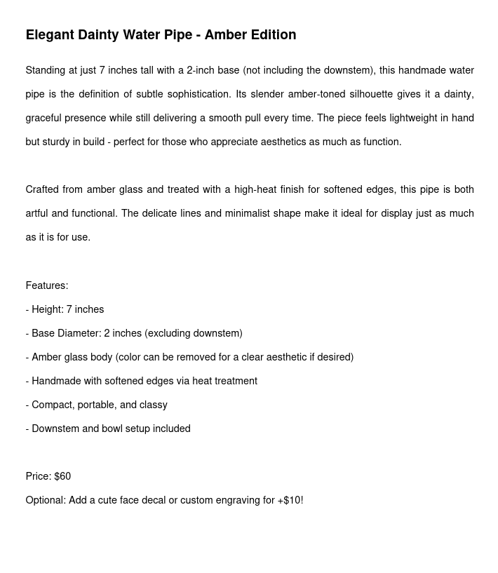
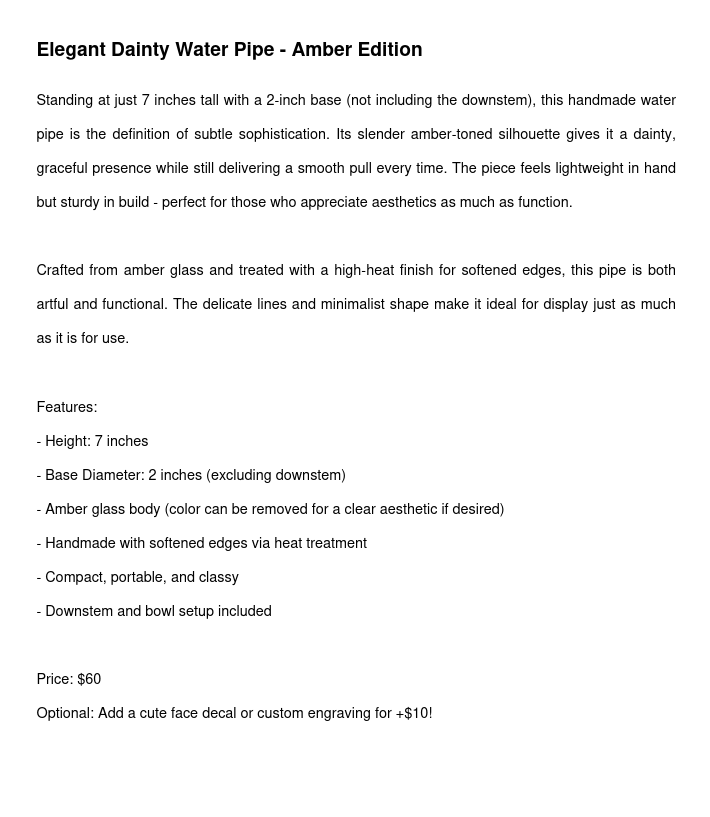

Elegant Onion – Amber Edition
 



Standing at just 7 inches tall with a 2-inch base (not including the downstem), the Elegant Onion is the definition of subtle sophistication. This handmade amber glass water pipe features a slender silhouette that gives it a dainty, graceful presence while still delivering a smooth pull every time. Lightweight in hand but sturdy in build – perfect for those who appreciate aesthetics as much as function.
- Height: 7 inches
- Base Diameter: 2 inches (excluding downstem)
- Amber glass body (color can be removed for a clear aesthetic if desired)
- Handmade with softened edges via heat treatment
- Compact, portable, and classy
- Downstem and bowl setup included
Price: $60
Optional: Add a cute face decal or custom engraving for +$10